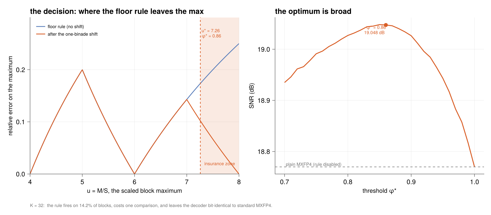
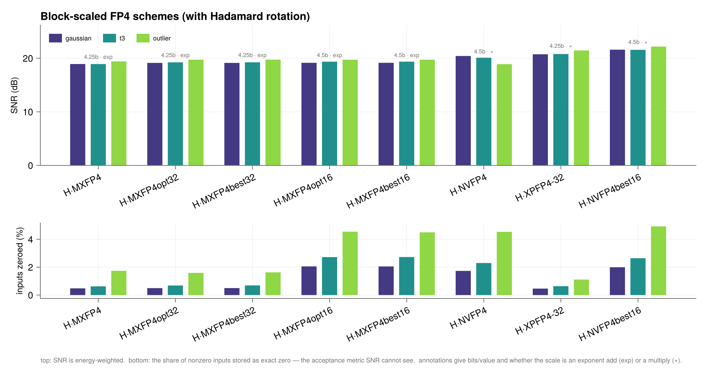

Improved FP4 schemes
Can one do better than MXFP4 and NVFP4 while keeping what makes them cheap? Yes — and the constraint is what must not change.
What has to be preserved
MXFP4's computational structure rests on four facts. Every scheme here keeps all of them:
- every $E2M1 \times E2M1$ product is exact in the wide accumulator;
- the per-block adder tree is exact (bounded by $K\cdot6^2$), so nothing rounds in flight;
- the scale factors out of the inner loop entirely, $y = S_a S_b \sum_i e_i e'_i$;
- the element grid stays E2M1, so FP4-native tensor cores multiply it natively.
What is left to improve is therefore only the scale — which value it takes and how it is chosen. That is an encoder-side decision, and for the power-of-two rules it costs no hardware at all.
The optimized shift rule
Standard MXFP4 with one added comparison in the encoder and an unchanged decoder. Compute $E' = \lfloor\log_2 M\rfloor$ and the maximum's mantissa fraction $\varphi = \log_2 M - E'$; then
\[e_x = E' - 2 + \mathbb{1}[\varphi > \varphi^*], \qquad \varphi^*_{K=32} = 0.86, \quad \varphi^*_{K=16} = 0.82\]
— use the ordinary floor scale unless the scaled maximum would land beyond $u^* = 4\cdot2^{\varphi^*} \approx 7.26$ (resp. 7.06), the insurance zone where the clamp toward code 6 is most severe, in which case shift one binade up.
xpuFP.mx_scale_opt — Function
mx_scale_opt(M::Real; phistar=0.86, emax=2) -> Float64The optimized shift rule's scale, from the block maximum M alone.
\[E' = \lfloor \log_2 M \rfloor, \qquad \varphi = \log_2 M - E', \qquad e_x = E' - e_{\max} + \mathbb{1}[\varphi > \varphi^*]\]
and S = 2^{e_x}. With emax = 2 (E2M1) this is MXFP4's floor rule plus a one-bit insurance shift, fired only when the maximum would otherwise land in the top sliver of the binade where the clamp toward code 6 is most severe.
The exponent is still a plain E8M0 value, so the decoder is bit-identical to standard MXFP4 — it cannot tell which encoder ran.
julia> mx_scale_opt(0.35) # φ ≈ 0.49 → no shift, the ordinary rule
0.0625
julia> mx_scale_opt(0.95) # φ ≈ 0.93 > 0.86 → shift one binade up
0.25
julia> mx_scale_opt(0.95; phistar = 1.0) # threshold disabled ⇒ plain MXFP4
0.125xpuFP.PHISTAR — Constant
PHISTARThe mantissa-fraction thresholds φ* of the optimized shift rule, by block size.
φ* = 0.86 at K = 32 and 0.82 at K = 16, i.e. shift when the scaled maximum would land beyond u* = 4·2^{φ*} ≈ 7.26 (resp. 7.06).
Both were confirmed by sweeping φ* on 2×10⁵ Gaussian samples: the SNR curve is flat to within 0.001 dB across φ* ∈ [0.84, 0.86] at K = 32 and [0.82, 0.84] at K = 16, so the exact constant is not delicate.
xpuFP.opt_shift_threshold — Function
opt_shift_threshold(K::Integer) -> Float64The threshold φ* for block size K. Known values are tabulated in PHISTAR; other sizes interpolate linearly in log₂K between them, which tracks the measured optimum closely enough that the residual is under 0.01 dB.
xpuFP.opt_shift_fires — Function
opt_shift_fires(x::AbstractVector; phistar=…, K=length(x)) -> BoolWhether the insurance shift fires for this block — i.e. whether the maximum's mantissa fraction exceeds φ*.
Measured firing rates on Gaussian data: 13.3% of blocks at K = 32 and 20.6% at K = 16.
xpuFP.opt_shift_rate — Function
opt_shift_rate(x::AbstractVector, K::Integer; phistar=…) -> Float64The fraction of K-blocks of x for which the shift fires.
xpuFP.MXFP4_OPT32 — Constant
MXFP4_OPT32MXFP4 with the optimized shift rule at K = 32.
Standard MXFP4 plus one comparison in the encoder; the decoder is bit-identical, because e_x is still an ordinary E8M0 exponent. Fires on 13.3% of Gaussian blocks and lifts 18.80 → 19.058 dB, against a best-of-two-powers ceiling of 19.063 dB — it captures 98% of the gain the entire power-of-two class can offer, and is within 0.005 dB of it.
Cheaper than MXFP4_BEST32 for the same result: best-of-two must quantize the block twice to compare MSE, while this needs one comparison on the maximum's mantissa.
xpuFP.MXFP4_OPT16 — Constant
MXFP4_OPT16The optimized shift rule at K = 16, threshold φ* = 0.82. Fires on 20.6% of Gaussian blocks and lifts 18.587 → 19.188 dB, within 0.005 dB of the 19.193 dB class ceiling.
xpuFP.plot_opt_shift — Function
plot_opt_shift(; K=32, x=randn(MersenneTwister(1), 200_000), size=(980,430)) -> FigureThe optimized shift rule, in two panels.
Left — the decision. The floor rule leaves the scaled maximum at u = 4·2^φ ∈ [4,8); the shaded sliver above u* is the insurance zone, where the clamp toward code 6 costs the most. The rule fires there and only there, shifting one binade so the maximum lands at u/2 ∈ [2,4) instead.
Right — the SNR as a function of the threshold, showing the optimum is broad: the curve is flat to within 0.01 dB over a wide band, so the constant is not delicate. φ* = 1 disables the rule and recovers plain MXFP4.
plot_opt_shift(; K = 32, x = randn(MersenneTwister(1), 120_000))
Measured on 2×10⁵ Gaussian samples:
| K | φ* | u* | floor | opt-shift | class ceiling | fires on |
|---|---|---|---|---|---|---|
| 32 | 0.86 | 7.26 | 18.800 | 19.058 | 19.063 | 13.3 % |
| 16 | 0.82 | 7.06 | 18.587 | 19.188 | 19.193 | 20.6 % |
It lands within 0.005 dB of what the entire power-of-two class can achieve, capturing 98–99 % of the available gain.
Best-of-two-powers must quantize the whole block twice and compare the two MSEs — 64 roundings per 32-element block. The shift rule needs one comparison on the maximum's mantissa against a precomputed constant. Same accuracy, a fraction of the encoder work.
e_x is still an ordinary E8M0 exponent, so the wire format is byte-identical and decoding is the same x̂ᵢ = eᵢ·2^{X-127}. Verified over 50 random blocks: same code count, same bits per block, same decode rule. An MXFP4 decoder reads this stream correctly with no changes at all.
The schemes
Missing docstring for IMPROVED_BLOCK_FORMATS. Check Documenter's build log for details.
Hadamard rotation
xpuFP.hadamard — Function
hadamard(K::Integer) -> Matrix{Float64}The orthonormal Sylvester–Hadamard matrix of order K (a power of two), scaled by 1/√K so that H' * H == I.
Applying it costs only additions and subtractions — no multiplies — which is why it composes with block quantization at negligible hardware cost.
Missing docstring for RotatedBlockFormat. Check Documenter's build log for details.
xpuFP.rotated — Function
rotated(bf::BlockFormat; name=…) -> RotatedBlockFormatWrap a block format in a Hadamard rotation. Requires a power-of-two block size.
An orthonormal rotation of each block before quantizing, costing only additions and subtractions. It is orthogonal to the whole ladder: it composes with any scale rule and is exactly invertible.
On i.i.d. Gaussian data it changes nothing — rotating an isotropic distribution gives the same distribution. Its value is entirely on real tensors with outliers, where it smears a lone large value across all $K$ coordinates instead of letting it capture the shared scale and wreck its neighbours.
Measured
xpuFP.compare_block_schemes — Function
compare_block_schemes(datasets; formats=IMPROVED_BLOCK_FORMATS, rotate=false)
-> Vector{BlockSchemeReport}Measure a set of block schemes on a set of datasets, reporting SNR alongside the two costs that decide deployability: bits per value, and whether the scale can be applied by an exponent add.
datasets is a collection of label => vector pairs.
using Random
rng = MersenneTwister(1)
compare_block_schemes(["gaussian" => randn(rng, 50_000)])xpuFP.print_scheme_table — Function
print_scheme_table(rows::Vector{BlockSchemeReport}; io=stdout)Render compare_block_schemes output as a table, sorted by the first dataset's SNR.
Missing docstring for BlockSchemeReport. Check Documenter's build log for details.
xpuFP.plot_block_schemes — Function
plot_block_schemes(datasets; formats=IMPROVED_BLOCK_FORMATS, rotate=false,
size=(980, 520)) -> FigureCompare block-scaled FP4 schemes on the two axes that decide deployability: measured SNR (top) and the share of nonzero inputs annihilated to exact zero (bottom).
The second panel exists because SNR is energy-weighted and therefore blind to destroyed small coordinates — a block whose outlier is well represented can post a flattering SNR while most of its neighbours have been zeroed. Read the panels together.
using Random
rng = MersenneTwister(1)
plot_block_schemes(["gaussian" => randn(rng, 40_000)]; rotate = true)plot_block_schemes(ds; rotate = true)
Without rotation, on Gaussian / Student-t₃ / outlier data:
| scheme | K | scale | b/val | applied by | gauss | t₃ | outlier | zeroed (outlier) |
|---|---|---|---|---|---|---|---|---|
NVFP4_BEST16 | 16 | E4M3 | 4.50 | multiply | 21.59 | 21.42 | 21.06 | 21.2 % |
XPFP4_32 | 32 | E4M3 | 4.25 | multiply | 20.75 | 19.84 | 18.27 | 36.4 % |
NVFP4 | 16 | E4M3 | 4.50 | multiply | 20.43 | 20.83 | 20.95 | 21.0 % |
MXFP4_BEST16 | 16 | E8M0 | 4.50 | exp add | 19.15 | 17.94 | 16.96 | 24.0 % |
MXFP4_BEST32 | 32 | E8M0 | 4.25 | exp add | 19.02 | 17.14 | 15.31 | 40.7 % |
MXFP4 | 32 | E8M0 | 4.25 | exp add | 18.78 | 16.92 | 14.88 | 38.5 % |
With Hadamard rotation, the annihilation rates collapse:
| scheme | gauss | t₃ | outlier | zeroed (outlier) |
|---|---|---|---|---|
H·NVFP4_BEST16 | 21.61 | 21.59 | 22.18 | 5.0 % |
H·XPFP4_32 | 20.76 | 20.83 | 21.47 | 1.2 % |
H·NVFP4 | 20.44 | 20.13 | 18.80 | 3.9 % |
H·MXFP4_BEST32 | 19.05 | 19.23 | 19.80 | 1.9 % |
H·MXFP4 | 18.80 | 18.94 | 19.47 | 2.2 % |
What to take from it
If the scale must stay an exponent add (MXFP4's real hardware advantage), use MXFP4_BEST32: +0.24 dB for one comparison at encode time, zero change to wire format, decoder or MAC. Add rotation and it reaches 19.05 / 19.23 / 19.80 dB with under 2 % of coordinates annihilated — against plain MXFP4's 38.5 %.
If a small scale multiply is acceptable, H·XPFP4_32 beats shipped NVFP4 on every dataset and uses fewer bits (4.25 vs 4.5), with a 17× lower annihilation rate. It gets there by spending the finer E4M3 scale over 32 elements instead of 16, which also halves the scale-application rate.
On outlier data, plain NVFP4 posts a higher SNR (20.95) than XPFP4_32 (18.27) — while zeroing 21 % of coordinates against 36 %. Both numbers are flattered by energy weighting: the well-represented outliers carry most of the energy, so SNR rewards getting them right and is blind to the annihilated neighbours. This is the report's own warning, reproduced. Read zeroed_count alongside.
MXFP4_BEST32 has higher SNR than MXFP4 (19.02 vs 18.78) but zeroes more coordinates on outlier data (40.7 % vs 38.5 %), because choosing the larger scale accepts clipping at the top in exchange for resolution in the middle, pushing more small values under the dead-zone threshold. It is not a free win on every axis.